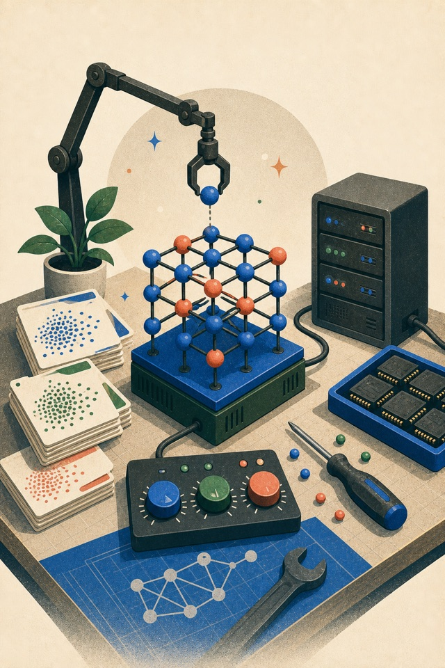
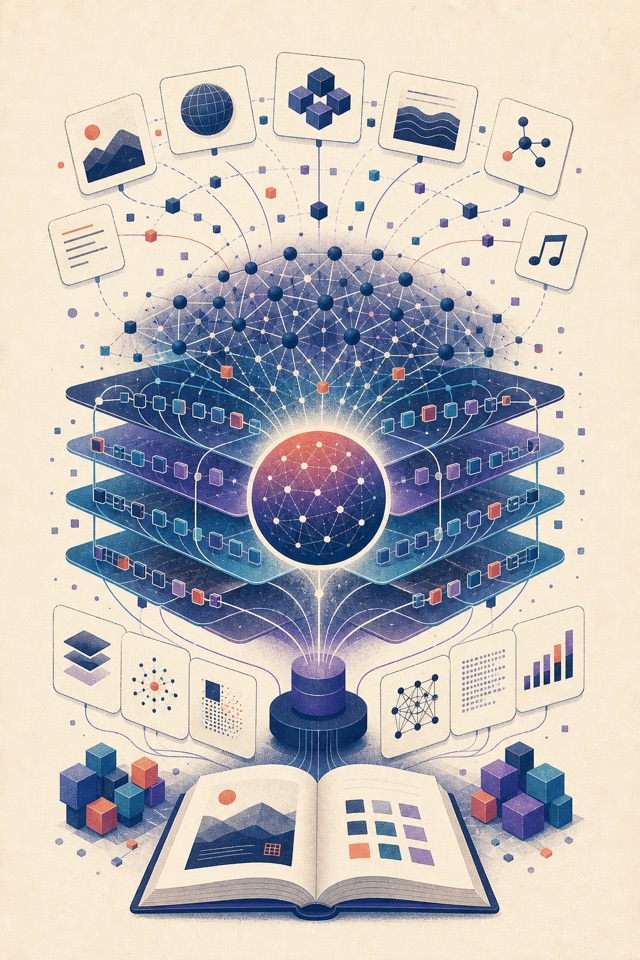
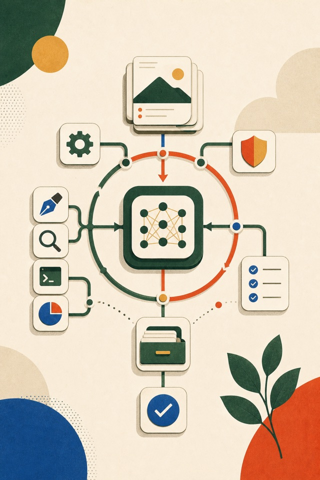
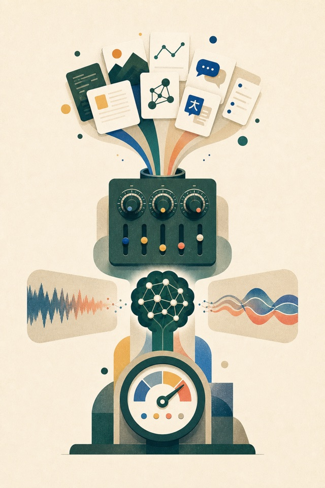
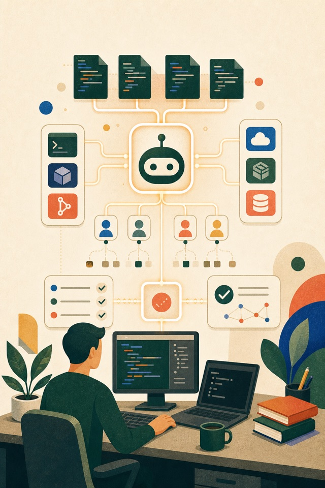

실무 하네스 엔지니어링
도구, 상태, 검증, 관측성과 운영 흐름을 실무 관점에서 설계하는 에이전트 시스템 가이드입니다.
Static Books
AI, LLM, 파인튜닝, 개발 학습, 언어 학습, 공무원 시험, 에이전트 도구, 하네스 엔지니어링, 경제와 투자, 부동산 경매를 이해하고 업무와 시험 준비에 활용하기 위한 HTML 문서 모음입니다.
도구, 상태, 검증, 관측성과 운영 흐름을 실무 관점에서 설계하는 에이전트 시스템 가이드입니다.
코드를 배우지 않아도 일을 정의하고 AI에게 요청하고 결과를 검증하는 비개발자용 성장 가이드입니다.
블로그 주제 선정부터 AI 활용, 도구 연결, 반자동 운영과 성과 분석까지 쉽게 따라 하는 가이드입니다.
선사 시대부터 현대사까지 한국사의 흐름과 핵심 사건, 시험 대비 문제를 한 권으로 정리한 가이드입니다.
메신저로 컴퓨터 작업을 자동화하는 OpenClaw의 설치, 활용, 로컬 LLM 연동과 실전 운영을 정리한 가이드입니다.

로컬 sLLM 실행부터 데이터셋 구축, 파인튜닝, 평가와 서빙까지 실습 중심으로 정리한 가이드입니다.
2026년 기준 9급 군수직 이해부터 문제풀이 로드맵까지 정리한 군무원 합격 매뉴얼입니다.
아파트 경매의 권리분석, 입찰, 명도, 대출, 리스크 관리를 실전 흐름으로 정리한 가이드입니다.
경제, 금융, 주식투자를 입문부터 고급 퀀트까지 시나리오와 실무 예시로 배우는 가이드북입니다.
LLM을 실제 업무 흐름에 적용하는 방법과 예시를 정리한 문서입니다.

LLM의 원리, 사용법, 응용, 생태계를 입문부터 심화까지 정리한 가이드북입니다.
CEFR A1부터 DELE C2까지 스페인어 학습 로드맵과 단어장, 기출형 문제를 정리한 가이드입니다.
입문부터 고급 학습, Celpe-Bras 최고등급 목표까지 이어지는 포르투갈어 학습 가이드입니다.
제로에서 JLPT N1까지 이어지는 일본어 학습 로드맵과 단어장, 문제 풀이 도구를 담은 가이드입니다.
Java로 코딩 테스트를 준비하는 입문자를 위한 학습 로드맵과 문제 풀이 가이드입니다.

에이전트 루프, 툴, 컨텍스트, 권한, 메모리, 검증, 운영까지 하네스 설계를 정리한 가이드북입니다.

LLM 파인튜닝을 데이터 설계부터 평가와 배포까지 실무 흐름으로 학습하는 가이드입니다.
Codex CLI의 설치, 명령, AGENTS.md, sandbox, MCP, 자동화, API 활용을 다루는 실전 가이드입니다.

Claude Code의 명령어, 스킬, 서브에이전트, MCP, 워크플로우, Agent SDK 활용을 정리한 가이드입니다.